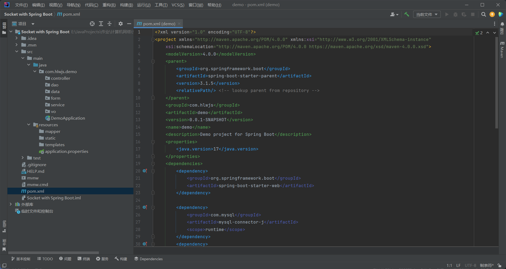
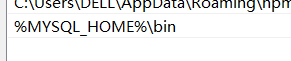
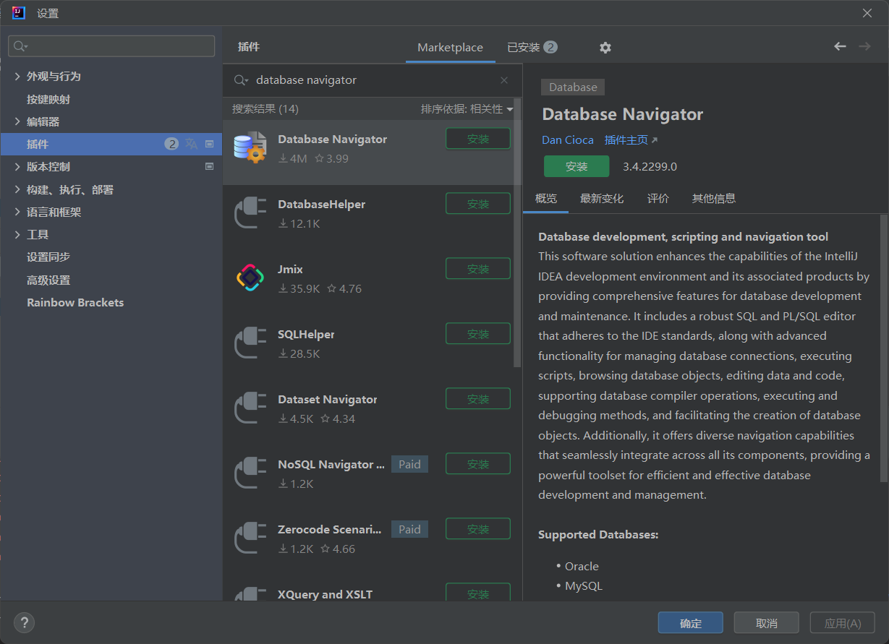
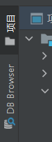
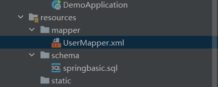
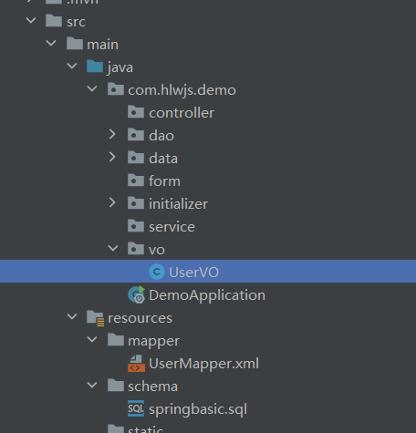
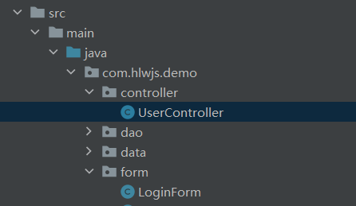
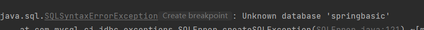

Java 基于SpringBoot的登录系统实现
一、spring boot项目创建
首先，打开IDEA。（不需要选择在文件夹中打开）
先点击上方的File-新建-项目，来到新建项目的部分

检查左方有没有关于spring initializer的内容。

如果像图中一样没有spring initializer，那么说明你使用的是社区版。需要去插件中安装一个spring boot的插件。
来到当前窗口上面的搜索框，直接输入spring，然后点击“在Marketplace中搜索”，选择spring boot helper安装

注意：这个插件只有30天的试用期，如果想要继续使用需要付费激活许可证。
然后重启IDEA，回到刚刚创建项目的窗口，就可以看到Spring Initializer

按照如图所示配置。
- 在项目sdk中选择1.8（如果没有1.8版本需要选择添加SDK来安装）
- Project选择Maven
- Group可以输入一个组名（比如com.hlwjs）
- 下方的Java选择8

点击下一步，进行初始化项目依赖。这里需要选择三个依赖项，分别是Lombok、MySQL Driver、Spring Web。在上面的搜索框中搜索一下即可找到

下一步，设置项目位置。只需要选择合适文件夹的位置即可。
这个时候就完成了Spring Boot项目的创建
七、项目初始化–添加软件包，修改maven配置
在创建完成后，需要对项目进行初始化，也就是进行最初的一些配置和结构的搭建。
在刚刚创建的文件中来到source.main.java.com.hlwjs.demo目录下，在里面创建一些软件包。在com.hlwjs.demo这个包上点击右键，选择新建-软件包，然后在里面创建controller、service、dao、data、form、service、vo七个软件包(注意创建时需要保留前面的前缀，直接在后面添加)，并且在src.main.resources下创建一个文件夹mapper。同时，在这个文件夹下会有一个application.properties文件（里面应该空空如也）。我们需要将这个文件重命名，从application.properties改成application.yml。如图

以下是对各个软件包和文件夹的解释：
- schema:放置数据库脚本文件
- src.main.java.com.njuzhy.demo:
- controller:本层主要放置了控制器
- service:本层主要放置了业务逻辑
- dao:本层主要是数据库接口
- data:本系统涉及到的数据实体
- form:本系统从前端接受到的格式
- vo:本系统返回给前端的格式
- src.resources.mapper:放置xml配置文件
- src.resources:application.yml是Spring配置文件
在下载软件包之前，我们也可以对maven进行换源，来提高下载速度。来到maven的设置界面

找到里面的“用户设置文件”，根据这个地址来打开所对应的这个settings.xml文件。勾选上右边的重写选项。然后复制这个地址打开这个文件。
注意：这个时候也许它会提示找不到这个文件。这种方法一般是因为你使用的maven是包含在IDEA中的maven，因此需要先将用户配置文件改为IDEA中的maven。地址一般如下：(你需要找到你安装IDEA的位置，不一定在D盘，你需要找到这个settings文件然后复制你自己的路径)
D:\IntelliJ IDEA Community Edition 2022.3.2\plugins\maven\lib\maven3\conf\settings.xml
然后点击确定，接着再找到这个文件并使用编辑器打开（vscode），找到其中的mirrors项。接着，我们在里面添加一项新的mirror项。代码如下：
1 | <mirror> |
修改后的界面如下：

最好能够将aliyun的项放到default的项上方。
八、项目初始化–配置mybatis
接下来，需要下载mybatis。可以在以下网址找到mybatis：https://github.com/mybatis/mybatis-3/releases

下载其中的3.5.14版本。解压文件，将其中的jar包置于某个目录中，并在环境变量PATH中添加这个目录的路径。（例如此处是添加到了E盘的javapkg当中）
先点击windows窗口中的搜索，输入环境变量，就可以来到“编辑系统环境变量”界面。

在里面点击【高级】下方的环境变量，进入环境变量窗口，然后在上方选择Path，点击新建，就可进入编辑界面。

点击右上方的新建，将jar包所在路径粘贴进去即可。
然后我们进入IDEA中，在pom.xml中补充mybatis配置
只需要打开IDEA中的pom.xml，如图

找到里面的dependencies项，这里面有许多dependency子项。我们需要在里面再加一项子项。
1 | <!--mybatis--> |
直接复制进去即可。

这个时候可能会发现这一栏变成了红色。不要着急。可以点击右上方的maven标签。

点进去之后点击左上角的刷新标准

这样之后，我们会发现原来红色的项现在已经变成了白色。
但是，我们真正需要的其实是org.mybatis.spring.boot，因此我们需要再将这个dependency修改成如下内容：
1 | <!--mybatis--> |
注意：不要修改其中的Maven版本，就让他是2.1.1，不然会出bug
这个时候我们可能会发现，这段代码又变成了红色。这个时候继续不要慌，只需要干一件事情，就是修改maven配置属性。
进入设置-构建、运行、部署-构建工具-maven-正在导入，找到下面的“自动下载”选项，然后勾选上其中的前两个选项“源”和“文档”

然后点击确定，再次进入pom.xml中，点击右上方的小标记来重新构建maven框架。

这个时候就会发现，构建完成之后原来的红色就没有了，这也说明我们的maven配置完成。
九、项目初始化–学习MySQL数据库
由于登录系统需要使用到数据库来存储信息，我们需要先学习数据库相关的知识
我们需要先下载数据库MySQL。前往MySQL的官网https://dev.mysql.com/downloads/mysql/ 下载MySQL社区版。我们需要下载的大版本号必须是5，因此需要点击上面的Select Version，并把版本号调至5.7.44.如图

MySQL的下载分为解压安装MySQL和使用安装包的图形化界面安装，两者都可以进行安装。这里我们演示解压安装的过程。
来到页面的下方，选择其中的Windows (x86, 64-bit), ZIP Archive（336.5M），并点击下载。它就会自动下载一个数据库的包。

如果下载之前提示你是否需要登录，你可以直接点击下方的No thanks来直接下载。
下载完毕后，可以选择一个文件路径，将这个压缩包放到其中解压。（这里我创建了一个MySQL文件夹。）
打开这个文件夹，来到其中与许多其他文件和文件夹一起的目录下。

在这个目录下创建一个文件，名为my.ini，并在其中添加以下内容：
1 | [client] |
注意：里面的basedir的地址需要修改为自己的安装目录，即创建的my.ini所在的目录
接下来我们需要先设置环境变量。首先我们打开环境变量配置，然后在里面新建名为MYSQL_HOME的环境变量，并将变量值设为自己的安装目录。

接着我们点击环境变量Path，选择编辑，然后在里面新建一个地址，名为%MYSQL_HOME%\bin，将其设为bin目录。

然后点击确定，这个时候就可以使用bin文件夹下的命令了。
接下来我们进入bin文件夹，在其中打开命令提示符或终端。在里面输入以下命令：
mysqld --initialize --console
（如果这里提示还是不可用，那么可以尝试关闭终端然后重新打开）

我们可以发现最后一行出现了root用户的初始密码。（在本例中即KMxLgzolt9?O）。需要将这个密码记录下来。后续登陆时，就可以使用该密码。
接下来继续输入命令来安装：
mysqld install
注意：如果此时出现了Install/Remove of the Service Denied!的消息，那么你需要关闭终端，然后重新以管理员身份打开cmd或powershell（win+X，选择终端（管理员）），并使用cd命令来到刚刚的bin文件夹下，重新输入命令。（如果文件夹带空格只需要将cd后面的路径前后添加一个双引号即可）

这样就安装完成了。接下来就可以输入以下命令来启动：
net start mysql

接下来我们就可以登录mysql。可以使用以下命令尝试登录：
mysql -h 主机名 -u 用户名 -p
- -h : 指定客户端所要登录的 MySQL 主机名, 登录本机(localhost 或 127.0.0.1)该参数可以省略;
- -u : 登录的用户名;
- -p : 告诉服务器将会使用一个密码来登录, 如果所要登录的用户名密码为空, 可以忽略此选项。
在本机中登录就可以使用命令mysql -u root -p，然后输入root密码：

出现如下字样就代表登录成功。
键入help;就可以查看其中的命令说明。
想要退出mysql，只需输入\q
然后我们可以输入net stop mysql命令来关闭mysql服务器。

在windows系统下，启动和关闭mysql服务器还有第二种方式，只需要在bin目录下分别输入mysqld --console和mysqladmin -uroot shutdown -p。

这个时候会发现无法在终端中输入任何内容。要想退出服务器，我们可以选择再启动另一个终端（不要关闭原来的终端），然后在其中输入mysqladmin -uroot shutdown -p命令。

这个时候它会提示你密码已经过期，因此我们暂时无法通过这种办法关闭服务器,需要先学习如何修改密码。因此我们采取第二种办法，就是在原来的终端中按下ctrl+C，即可退出。

然后我们使用net start mysql来启动mysql，并尝试登录。这个时候就可以修改密码了。（在没有修改密码之前你无法进行任何操作）
输入命令：ALTER USER USER() IDENTIFIED BY ‘123456abcde’就可以修改密码。其中的123456abcde就是新密码。你也可以修改成其他的密码。
注意：mysql中的每一条命令都需要以分号";"结尾，就像编程一样

这个时候先尝试使用\q退出数据库，net stop mysql关闭数据库，然后再次使用
mysqld --console命令，并换另一个终端输入mysqladmin -uroot shutdown，输入密码，这次就可以顺利关闭数据库了

这两种登录方法的不同之处在于：net start的方法提供的界面相当于是给数据库管理员的，不会显示信息。而使用mysqld命令启动是相当于给调试人员使用的，可以从命令行中看到许多数据库的输出信息，便于debug。通常作为管理员，我们使用的都是net start命令来启动数据库。
接下来是一些MySQL中用户设置的办法。
首先是添加MySQL用户。只需要在mysql中的user表中添加新用户。输入命令use mysql;来切换上下文到mysql数据库。然后就可以使用INSERT INTO USER命令来添加一个用户。
1 | INSERT INTO user |
注意：这里的authentication_string是MySQL5.7版本之后使用的key，如果在更早的版本中使用的是“password”。
注意：在添加完这段代码后还需要输入一个命令：FLUSH PRIVILEGES;，这样之后会重新载入授权表，才可以使用刚刚创建的用户登录。（除非重启mysql服务器）
注意：如果这里显示的是“ERROR 1364 (HY000): Field ‘ssl_cipher’ doesn’t have a default value”，说明数据库的设置中不让直接通过插入数据的方式新建用户。因此我们不能使用这一方法。
这样，我们就创建了一个名为abc，密码为123456的用户。
这种方式实际上是通过直接在user表中插入一条user数据的方式来新建的方式。既然这种方式会被禁用，那就说明除此之外，还有第二种更推荐的创建用户的方法，那就是直接使用CREATE USER ‘username’@‘host’ IDENTIFIED BY ‘password’;命令。（虽然我们可以通过修改my.ini的方式来调整，但是不推荐）
- username：你将创建的用户名
- host：指定该用户在哪个主机上可以登陆，如果是本地用户可用localhost，如果想让该用户可以从任意远程主机登陆，可以使用通配符%
- password：该用户的登陆密码，密码可以为空，如果为空则该用户可以不需要密码登陆服务器
同样，如果想要创建一个名为abc，密码为123456的用户，可以直接使用以下命令：
CREATE USER ‘abc’@‘localhost’ IDENTIFIED BY ‘123456’;

然后我们可以为这个用户指定一些不同的权限。可以使用GRANT命令。
1 | GRANT SELECT,INSERT,UPDATE,DELETE,CREATE,DROP |
这样就相当于将GRANT SELECT,INSERT,UPDATE,DELETE,CREATE,DROP的权限授予给用户abc。中间的ON TUTORIALS.*代表被授予权限的数据库和表，这里就代表是TUTORIALS数据库中全部的表。

以下列举一些MySQL中的常用命令
USE 数据库名;（选择要操作的MySQL数据库）SHOW DATABASES;（列出数据库列表）SHOW TABLES;（显示指定的数据库中的所有表（之前使用use命令确定的数据库））SHOW COLUMNS FROM 数据表;（显示数据表的属性，主键信息 ，是否为 NULL，默认值等其他信息。）SHOW INDEX FROM 数据表;（显示数据表的详细索引信息，包括主键）SHOW TABLE STATUS [FROM db_name] [LIKE ‘pattern’] \G:（输出MySQL数据库管理系统的性能及统计信息）
例如：SHOW TABLE STATUS from RUNOOB LIKE ‘runoob%’;表示显示数据库RUNOOB中以runoob开头的表的信息。在最后面也可以加上\G，表示查询的结果按列打印。
基本命令
创建数据库
使用CREATE DATABASE 数据库名即可创建一个指定数据库名的数据库。

这样就创建了一个名为DATABASETEST的数据库
删除数据库
使用DROP DATABASE 数据库名即可删除一个指定数据库名的数据库。

选择数据库
使用use 数据库名即可删除一个指定数据库名的数据库。
数据类型
MySQL中支持的数据类型分为三种：数值、日期/时间、字符串（字符）
以下是MySQL中支持的一些数据类型：
1、数值：
| 类型 | 大小 | 范围（有符号） | 范围（无符号） | 用途 |
|---|---|---|---|---|
| TINYINT | 1 Bytes | (-128，127) | (0，255) | 小整数值 |
| SMALLINT | 2 Bytes | (-32,768，32,767) | (0，65,535) | 大整数值 |
| MEDIUMINT | 3 Bytes | (-8,388,608，8,388,607) | (0，16,777,215) | 大整数值 |
| INT或INTEGER | 4 Bytes | (-2,147,483,648，2,147,483,647) | (0，4,294,967,295) | 大整数值 |
| BIGINT | 8 Bytes | (-9,223,372,036,854,775,808，9,223,372,036,854,775,807) | (0，18,446,744,073,709,551,615) | 极大整数值 |
| FLOAT | 4 Bytes | (-3.402823466E+38，-1.175494351E-38)，0，(1.175494351E-38，3.402823466351E+38) | 0，(1.175494351E-38，3.402823466E+38) | 单精度浮点数值 |
| DOUBLE | 8 Bytes | (-1.7976931348623157E+308，-2.2250738585072014E-308)，0，(2.2250738585072014E-308，1.7976931348623157E+308) | 0，(2.2250738585072014E-308，1.7976931348623157E+308) | 双精度浮点数值 |
| DECIMAL | 对DECIMAL(M,D)，如果M>D，为M+2否则为D+2 | 依赖于M和D的值 | 依赖于M和D的值 | 小数值 |
2、日期和时间
| 类型 | 大小 (bytes) | 范围 | 格式 | 用途 |
|---|---|---|---|---|
| DATE | 3 | 1000-01-01/9999-12-31 | YYYY-MM-DD | 日期值 |
| TIME | 3 | ‘-838:59:59’/‘838:59:59’ | HH:MM:SS | 时间值或持续时间 |
| YEAR | 1 | 1901/2155 | YYYY | 年份值 |
| DATETIME | 8 | ‘1000-01-01 00:00:00’ 到 ‘9999-12-31 23:59:59’ | YYYY-MM-DD hh:mm:ss | 混合日期和时间值 |
| TIMESTAMP | 4 | ‘1970-01-01 00:00:01’ UTC 到 ‘2038-01-19 03:14:07’ UTC | YYYY-MM-DD hh:mm:ss | 混合日期和时间值，时间戳 |
3、字符串类型
| 类型 | 大小 | 用途 |
|---|---|---|
| CHAR | 0-255 bytes | 定长字符串 |
| VARCHAR | 0-65,535 bytes | 变长字符串 |
| TINYBLOB | 0-255 bytes | 不超过 255 个字符的二进制字符串 |
| TINYTEXT | 0-255 bytes | 短文本字符串 |
| BLOB | 0-65,535 bytes | 二进制形式的长文本数据 |
| TEXT | 0-65,535 bytes | 长文本数据 |
| MEDIUMBLOB | 0-16,777,215 bytes | 二进制形式的中等长度文本数据 |
| MEDIUMTEXT | 0-16,777,215 bytes | 中等长度文本数据 |
| LONGBLOB | 0-4,294,967,295 bytes | 二进制形式的极大文本数据 |
| LONGTEXT | 0-4,294,967,295 bytes | 极大文本数据 |
基本命令2
创建数据表
使用命令：CREATE TABLE table_name (column_name column_type);即可创建一个带有名字和数据类型的表（可以添加很多个）。
以下列命令为例：
1 | CREATE TABLE IF NOT EXISTS `table_test`( |
注意：索引项的名称左右两侧的不是单引号而是反引号（与字符串不同）。
以上命令创建了一个名为table_test的表（创建表之前需要先use一个数据库），表中有三列，分别为id，name，date，其中ID是INT型，UNSIGNED表示是无符号数，AUTO_INCREMENT表示是一个自增序列（每次在表中创建新的一行时，该项会自动在上一个数据的基础上+1）；name是一个最多50个字符的字符串，NOT NULL表面该表项不能为空；PRIMARY KEY指定了这个表的主键为id（唯一确定一个数据项的索引）；最后的ENGINE表明使用的引擎是InnoDB（不需要修改）

删除数据表
使用命令：DROP TABLE table_name ;
如果想要删除刚刚的table_test表，只需输入DROP TABLE table_test;
插入数据
使用命令：INSERT INTO table_name ( field1, field2,…fieldN )
VALUES
( value1, value2,…valueN );
其中的field即为表项的名称，然后value为想要插入的值。
例如：我们想要在table_test中插入一个name为zhangsan，date为2000-01-01的项，即可使用如下命令：
1 | INSERT INTO table_test |
注意：字符串和日期的两侧都必须添加双引号。
当然，日期也可以使用NOW()来替换，这是一个MySQL中的函数，用来获取当前时间。因此可以将VALUES括号改成：(“zhangsan”,NOW());

插入数据
可以使用以下命令：
1 | SELECT column_name,column_name |
- column_name表示要查询的列，可以指定多个
- table_name表示数据表的名称，也可以指定多个（用逗号分割）
- 后面可以选填WHERE表达式，即需要满足的条件，这些条件直接可以使用and或or来增加。例如WHERE name=“zhangsan” and date = “2000-01-01”，表示选择所有name为zhangsan并且date为"2000-01-01"的行（这里的等号是单引号）
- LIMIT N表示最多可以选出N条数据
- OFFSET M表示偏移量，表示选择所有满足条件的行中的从第M行开始的行，常常和LIMIT使用。
例如：一个数据表有100行，其中所有的偶数行满足条件，那么当我设置LIMIT 10和OFFSET 10时，它会筛选出原始行中的22、24、26、…、40行。

自此，我们将数据库中的最基本的操作学完了。
十、项目初始化–配置MySQL数据库
在学习完MySQL数据库的基本操作之后，我们就可以来配置spring boot项目中的application.yml文件了。
打开项目中的application.yml（之前重命名过的文件，在source.main.resources文件夹下），并添加如下代码：
1 | server: |
注意：这是一个yml文件，其中的格式是严格的，并且在每个冒号的后面必须添加一个空格。（如果是通过tab自动补全命令实现的，它的空格会自动加上，但是如果是手打的就需要注意）
以下是对其中每一项的解释：
- server.port：表示服务器的端口号
- spring.datasource表示的是spring的数据库的相关配置信息
- 其中，driver-class-name表明使用的数据库驱动类driver的类名（无需更改）
- url是指你数据库的url，其中的springbaisc是指数据库的名称（这里的springbasic还没有创建，将在之后创建）
- username指登录MySQL的用户，直接使用root即可
- password是你登录root用户使用的密码，注意：你需要将其修改为你自己的密码
- bySearch是datasource中你自己添加的几项内容（原来的配置中没有），可以用于实现你自己的个性化需求。
- testWhileIdle表示是否在空闲时是否测试连接
- validationQuery验证连接是否有效的查询语句
- timeBetweenEvictionRunsMillis定期清理不使用的连接的时间间隔
- mybatis是之前用于映射的框架，里面添加了有关mybatis的配置内容
- 其中的mapper-locations表示可以将接收到的内容映射到哪个文件中（这里是mapper文件夹下的所有xml文件（目前还没有创建这个文件））
- type-aliases-package是指mybatis应该扫描的Java包，它会在这个包中寻找别名（Alias）类。注意:你需要修改其中的包名，由于我之前创建的包是hlwjs，因此中间使用了hlwjs。你需要修改为你在IDEA中创建的包名（如果与我一致则无需修改）

接下来我们需要创建一个用于在程序开始运行时进行数据库配置的数据库配置文件。
首先，我们先启动MySQL，并在里面创建一个名为springbasic的数据库

接着。我们在项目中的src/main/resources文件夹中创建一个schema目录，并在里面创建springbasic.sql文件。

这个文件是一个SQL脚本文件，包含了数据库初始化脚本，里面存放了一些MySQL中需要被执行的的命令。这个文件可以被执行。通常可以手动执行这个文件，也可以由程序自动执行这个文件。
（如果想要程序自动执行这个文件，只需要在application.yml中的spring.datasource中添加一项：initialization-mode: always即可。但是这个项目我们暂时不需要）
在这个文件中添加如下命令：
1 | SET NAMES utf8mb4; |
以上都是一些MySQL中的命令。简单来说，它使用SET命令设置了一些与配置有关的变量（NAMES表示使用的字符集，FOREIGN_KEY_CHECKS表示外键检查，在对数据库进行操作前后分别关闭和开启可以保证安全性）
因为我们已经学习过MySQL中的命令，所有应该对这些命令比较了解了。它主要做的就是创建了一个名为springbasic的数据库，在这个数据库中创建了名为user的数据表（如果原本有就先把原来的删了）。这个数据表中有三项：uid、username和password，并且设置uid为主键。
这个文件是可以被运行的，需要使用mybatis。不管稍微复杂一点。我们主要需要测试这个文件是否能够正确执行，因此我们可以暂时先使用一种更简单的方法来运行这个文件（仅仅用于测试是否能够正常运行）。（理论上下面的步骤可以跳过，直接跳到第六部分）
在src/main/java/com.hlwjs.demo中创建一个软件包Initializer，并在其中新建一个DatabaseInitializer.java文件。

在这个文件中添加如下内容：
1 | package com.hlwjs.demo.initializer; |
然后尝试运行这个文件中的main函数。
注意：如果你在运行时出现了以下错误：

那么你需要修改你项目的SDK（避免和其他组件产生冲突）
首先来到设置-构建、执行、部署-编译器-Java编译器，选择上方的项目字节码版本，将其改为与下方模块中的“目标字节码版本”一致。

选择确定，接下来来到文件/项目结构中，选择左侧的“项目”，将其中的SDK版本修改为与刚刚的一致。（如果没有这个版本需要点击编辑，点上面的加号选择下载JDK）

然后来到左边的模块栏，确保语言级别与刚刚的一致。

这个时候就配置了JDK版本为17（不再使用1.8版本）。但是会出现问题，在刚刚编写的DatabaseInitializer中出现了两个错误：无法解析符号：PostConstruct
这是因为在Java11以后，这个注解已经被废弃了。因此我们必须在pom.xml中新增加一个依赖项：
1 | <dependency> |
注意这里的版本号不一定是1.2，需要以你实际拥有的为准（一般当你输入group ID时它会有自动补全，他会补全后面的全部，包括版本号。你就可以使用这个版本号）
记得点击右上方的重新构建maven，这样就会发现刚刚的两个错误消失了。
这个时候可以尝试运行main函数。如果什么都没发生，那么就说明没问题。
接下来打开src/main/java/com/hlwjs/demo中的DemoApplication。里面有一个自动生成的main函数。直接运行这个函数。
注意：如果运行结果显示无法连接，如下：

这有可能是因为数据库中没有springbasic这个库（需要运行前提前在仓库中创建这个库，也不能随便删除）。只需要在MySQL中手动创建这个库既可
这个时候我们应该就已经拥有了一个数据库的结构。我们可以点击右上角的database窗口查看数据表的结构。

注意：如果你的窗口右侧没有这个database窗口，说明你使用的是社区版。解决办法就是，打开插件窗口，下载一个叫做Database Navigator的插件

安装以后重启IDEA。这个时候我们应该可以在左上角看到DB Browser的一个窗口。它就可以代替原来的Database窗口。

然后点击，打开这个窗口。

点击右上角的加号，新建一个与数据库的连接。需要选择MySQL。然后在出现的窗口中进行如下操作：
- Database栏中将mysql改成需要连接的数据库名，即springbasic（URL会自动修改）
- 在User和Password这里分别填入用户名和密码（root和你自己设置的密码）

然后选择上方的properties栏，在里面填入一些属性，这些属性就是在之前application.yml中的spring.database中的url中问号“？”后面的一些参数。这些参数具体如下：
- serverTimezone: GMT%2B8
- useUnicode: true
- characterEncoding: utf-8

然后点击下方的Test Connection按钮。
正常情况下应该可以成功连接。

注意：如果连接时显示无法连接（如下图）

那么可以尝试将参数serverTimezone从“GME%2B8”改成“Asia/Shanghai”，就可以成功连接了。

这个时候点击确定，就可以在DB Browser中创建一个连接。

我们可以打开其中的schemas，就可以查看到MySQL的数据库中的各种信息，其中就可以找到我们刚刚在DatabaseInitializer代码中创建的user表

我们也可以查看user表中的数据。只需要在DB Browser中双击user表，然后它会弹出一个Data fliters的窗口。我们不需要筛选数据，因此直接选择取消。然后我们就可以看到打开了一个user的标签页。然后我们点击上方的uid列，就可以查看到这个表中的数据了。

自此我们的数据库的配置就完成了。
十一、构建项目–配置User类和dao层
前面的五节完全在为了项目的初始化做准备，到这节就可以正式开始构建项目了。
在开始之前，还需要安装一个Lombok的插件。进入设置-插件，搜索Lombok，安装即可。
也许这个时候我们已经自动安装过Lombok了，只需要点击窗口上方右边的已安装，就可以查看到

接下来进入具体代码的实现。首先，我们需要构建一个代表用户的User类。这个类应该属于com.hlwjs.demo.data软件包，我们需要在data软件包中创建一个User.java文件。

User类中需要包含三个成员变量，分别代表了数据库中User表的三个列：
- uid
- username
- password
除此之外，这个类作为一种数据，我们需要为它使用@Data的注解。（@Data注解是Lombok中的注解之一，代表数据类。如果为某个类添加了@Data的注解，Lombok在编译时就会自动生成各种数据需要的方法，比如Getter和Setter、toString、equals方法等，而我们无需手动编写（代码文件中也不会出现这些方法））
因此我们需要在类中添加以下代码：
1 | package com.hlwjs.demo.data; |
添加后的效果如图：

注意：以后做大项目时，最好能够有一个编写注释的习惯，通常需要在每个方法或类前面使用Javadoc注释的格式添加注释。这些注释会被用于生成Java文档，同时在其他人使用这个函数时也可以看到这个函数的注释信息。格式如图：

当其他人将鼠标指针停留在这个类时，实际显示出来是这样的

当然，我们这次也可以不添加这种注释。
完成了User类之后。我们需要创建一个用作数据库接口的UserDao类。这个接口中会有一些用于操作数据库的方法，这些方法会用来映射到对数据库的操作的代码中（不在本类中实现）。
UserDao接口属于com.hlwjs.demo.dao软件包中，因此我们可以在dao包中创建一个UserDao接口类：

这个类用到了刚刚创建的User类，因此需要导入这个类。
同时，这个接口类需要添加一个@Mapper注解。这个注解是由Mybatis提供的，它可以标识一个接口是MyBatis的映射器，通常在数据库访问中定义一些数据访问的方法。我们只需要在外部指定这些方法对数据库的具体操作，然后这些方法会在编译时自动生成对应的实现类。（即不需要通过Java代码来实现这些方法具体的操作，而是可以使用其他方式或语言来实现。（比如这里我们可以通过xml语言来进行数据库的操作，再将其映射到Java的某个具体方法中））
因此，这个类中需要添加的内容如下：
1 | package com.hlwjs.demo.dao; |
最后的效果如下：

编写完这个接口之后，我们就需要具体定义这两个Save和getUserByUsername方法具体需要做什么。因为这两个方法都是用于操作数据库的，因此我们需要具体实现操作数据库的一些命令（由于使用了Mapper注解，我们实现这些方法需要在xml中实现）。
首先我们需要创建一个UserMapper.xml文件。这个文件被存放在src.main.resources.mapper文件夹下。

这个文件被用来定义那两个方法，调用那两个方法时，方法具体的实现会被映射到这个xml文件中编写的命令中
接下来在文件中输入以下内容：
1 | <?xml version="1.0" encoding="UTF-8" ?> |
最终的效果是这样的：

接下来是对文档中内容的解释：
- 第一行的xml是对xml文档的版本和编码的指定，DOCTYPE定义了xml文档的结构和规则；
- 之后有一个整体的mapper项，里面的namespace指定的就是需要被映射到的那个类。（也就是UserDao类）。因此，接下来的映射都是映射到UserDao这个类中的某些具体的方法。
- 然后里面定义了一些操作，比如insert和select操作。每一项中的id指定了需要被映射到的UserDao类中的方法。
注意：这个映射是有它的映射规则的。通常情况下，这个操作会映射到Java中与id同名的那个函数中。例如：假如这里id=“save”,那么它就会映射到UserDao中名为save的方法。但是，我们也可以在UserDao类的方法中使用注解。例如你可以为另一个名为save2的方法添加注解：@Insert(“save”)，那么这样它会优先映射到这个save2方法中。因此，映射的规则就是先找有没有使用了ID相同的注解的方法，如果没有，再去寻找并映射到方法名相同的方法
- 在Insert的后面还有一个useGeneratedKeys，表面自动生成主键（不需要主动在命令中指定并赋值），而keyProperty则指定了将这个生成的主键赋给这个User参数的哪个成员变量。（User是调用这个Java方法时需要传递的一个参数，而这里它会自动生成一个主键key，并将其赋值给这个User对象的uid这个成员变量）
- 然后每个Insert之间的内容就是数据库操作的内容。想必大家应该比较熟悉了。不过需要注意的是，里面的#{username}和#{password}实际上表示的是你传递给函数的User参数中对应的成员变量，即User对象中的username和password字段。
- 在select中还有一个resultMap，它是用来处理函数返回值的，里面的内容对应下文resultMap项的id的，也就是说这个操作对应的Java方法的返回值就是下文中id为User的resultMap所定义的内容。
- 来看下文的resultMap，里面有一个id项和两个result项，其实本质差不多。就是表示将User对象中的名为uid、username、password的成员变量赋值为选出的数据项中名为uid、username、password列中对应的数据。（选的操作在上面select中定义）
注意：save函数的返回值是boolean，这个返回值似乎在xml中并没有定义。但其实它是自动被定义的，也就是说如果你插入成功了，那就返回true，如果失败就是false。
总之通过这个Mapper的定义，我们就处理完了这两个函数的操作。
十二、构建项目–配置Service层。
前面几章的内容都是在进行与数据库的交互，都偏向于内部简单的数据访问功能。而我们接下来就要定义一些具体的服务功能。这些服务功能就是面向具体业务的。
作为一个服务，不管是登录还是注册，我们接收到信息后需要返回一些信息给前端。所以，我们需要创建一个UserVO类，作为返回给前端的数据格式，并将其设为Data的一种（使用@Data注解）。
首先我们在软件包com.hlwjs.demo.vo下创建一个UserVO.java文件。

由于我们给前端的数据并不需要密码（哪有登陆后直接把密码显示出来的），因此我们不需要密码这一项。在UserVO类中添加如下代码：
1 | package com.hlwjs.demo.vo; |
在创建完了数据类型的类后，我们接下来需要实现对应的处理方法，即UserService接口以及对应的实现类。
首先我们先来创建一个UserService接口。在com.hlwjs.demo.service包中创建一个UserService.java的文件。

这个类中包含的是我们网络中操作的一些方法，理论上我们可以编写很多种方法。当然，本次作业中，我们的要求就是实现登录和注册接口。因此我们需要添加登录和注册的方法。
在接口类中添加如下代码：
1 | package com.hlwjs.demo.service; |
这个接口中定义了用户注册和用户登录的方法。接下来我们就要具体实现这两个方法。
在相同的包下（com.hlwjs.demo.service），继续创建一个名为UserServiceImpl的实现类。

其中的save方法主要用来注册用户，因此它要做的就是在数据库中插入一条用户数据，并进行额外的判断是否成功插入的操作，因此它就需要调用UserDao中定义过的往数据库中插入数据的save方法。
而login方法则用来登录。首先我们通过用户名从数据库中取出这个用户的信息（包括密码），然后比较判断是否没有取出用户或者是否取出的用户的密码与输入的密码不一致，由此决定返回的内容。返回时返回的是一个UserVO，即前端数据格式。
因此，我们可以在类中添加如下代码：
1 | package com.hlwjs.demo.service; |
注意这里最后第二行一定是BeanUtils.copyProperties(user,userVO);老师的图里面写错了，把user和userVO顺序写反了，当时debug才发现的
其中的@Service就是告诉spring说这个类是一个服务层的类，就便于spring框架将其自动扫描并纳入管理之中。
@Autowired可以实现自动注入，简单来说就是在项目启动时自动给里面的UserDao创建一个实例。
自此就大体上把与具体业务逻辑有关的部分做完了。
十三、构建项目–配置Controller层
我们已经实现了具体业务逻辑，但是还有一个问题产生，那就是什么时候调用这些业务？我们可以接收到一个请求，但是接收到请求之后并不是直接就调用具体业务逻辑的。我们需要解析出这个请求的具体类型，然后交给不同的业务去处理。同时，有时候一个请求也包含多个业务，有时候一个。这中间需要进行一定转换，也就是中间需要经历一个控制与管理的过程，才可以将请求转换为具体业务。
所以我们需要做的就是定义一个控制层，将请求转换为具体业务。这部分内容就涉及到了有关网络的内容。
通常，向某个网站发送数据是以表单（Form）的形式发送的。表单通常包含在请求报文中，我们可以接收到表单，获取表单中的数据。因此，我们需要首先定义一些表单类，用于表示接收到的或发送的表单。
在com.hlwjs.demo.form包中创建两个类：UserForm和LoginForm，分别代表了进行注册和登录时接收的表单。

分别在这两个类中添加如下代码：
UserForm:
1 | package com.hlwjs.demo.form; |
LoginForm:
1 | package com.hlwjs.demo.form; |
其实本质上这两个类没有差别（但还是分开来比较好）
接下来我们需要在com.hlwjs.demo.controller包中添加一个UserController.java的类

既然这个类需要处理接受到的报文，那么就需要进行一些映射，即请求的某个属性就对应了某个操作。通常，一个请求的具体参数会被包含在url中，因此我们只需要解析请求的url，就可以将不同url映射给不同的处理逻辑。
基于以上需求，我们可以在UserController类中添加如下代码：
1 | package com.hlwjs.demo.controller; |
以下是对这段代码的解释：
- @RestController的注解结合了@Controller注解和@ResponseBody注解。前者表明这个类是一个用于处理HTTP请求的控制器，后者表明这个类中方法的返回值直接作为HTTP的响应体（无需用于渲染视图，非常直接）。在此基础上才有@RequestMapping和@PostMapping注解。
- @RequestMapping指定了控制器处理的基本URL路径，也就是说假如注解是@RequestMapping(“/user”)，那么所有发往这个应用的，并且在url后面指定了/user，的请求，都会被这个类所接受，并且再根据更后面的url项来判断具体交给哪个函数来处理。
- @PostMapping用于处理POST请求，与RequestMapping一样，也会根据请求的url路径来具体选择某个函数。例如，如果一个方法使用了@PostMapping(“register”)，那么假如一个url为http://127.0.0.1:8080/user/register/…的请求就会被交给这个函数来处理。
- @RequestBody用于指定某个参数用来装请求体中的内容。也就是说，在这个@RequestBody UserForm userForm的例子中，如果我获得的请求的主体（Body）中包含了username和password参数，那么这两个参数就会被这里的userForm接收，这两个参数会被赋予给userForm对象中的同名成员变量。
当有请求传入这个url时，就会被这个类中的这些方法接收，其中的表单会被表单类接收，然后调用业务逻辑方法，最后返回结果。
至此，整体的代码框架就已经搭建完成了。
十四、项目测试
代码框架搭建完成后，就该进行项目的测试了。首先，我们按照原来的方法，打开DemoApplication，并运行其中的main函数（在之前测试MySQL的时候就运行过）
这个过程中也许会出现一些错误。例如，如果出现了以下报错信息：

就说明有一个组件没有被spring boot获取到（通常是因为没有添加对应的注解）。你可以检查一下UserDao类前面有没有添加@Mapper注解。你也可以尝试在DemoApplication类中添加一个注解@MapperScan(“com.hlwjs.demo.dao”)

如果出现了如下图的错误：

那么你可以去检查一下pom.xml中的org.mybatis.spring.boot。如果它的版本号这里提示你可以升级到3.0.2版本，如图

那么你可以尝试去升级一下，点击提示视图中的“将…升级到版本’3.0.2’”。

这个时候必然会报错。这是因为你还没安装这个版本。你只需要在右上角的maven窗口点击重新加载maven项目来重新下载一下就行了。

这个时候就会发现不再报错了。然后重新运行main函数，应该就可以正常。
如果出现了这个问题：

就说明没找到数据库。你可以检查一下这个数据库是否存在。如果它不存在了，你就得先在数据库控制台中使用CREATE DATABASE springbasic;命令创建一个数据库。
这个时候正常情况下，就可以运行这个应用了。

可以看到右下角显示的字“Started DemoApplication”。这就说明你成功运行了。
接下来，我们就可以测试这个应用能不能正常运行。
打开之前学习过的Postman，如图

你可以尝试往url中输入这个应用进程的url。首先我们先尝试注册。方法就是在url中输入如下内容：
http://localhost:8080/user/register?username=zhangsan&password=123456
然后我们点击url下方的Body选项，在Body中点击raw，就可以编辑请求报文的主体（Body）部分。在里面添加参数：“username”: “zhangsan”,“password”: “123456”。同时，需要将选项右边的Text修改为JSON，如图

Body部分的内容就会被我们的@RequestMapping和@PostMapping的函数接收到。点击send，就可以查看结果。
假如中间出现了错误，就会接收到如下图所示的类似的错误：

你可以根据不同的错误类型推断哪里出错了。例如下图的错误，就是因为参数没有加引号（所有参数都是字符串，不允许出现数字）或者没有设置格式为JSON导致的。
如果一切正确，就可以收到如下的结果：

我们可以得到一个单一的结果。但是你会发现这里是false。为什么呢？你可以去DB Browser中查看这个数据库的状态。如果你发现user的username已经出现过zhangsan了，那么就说明已经有该用户。如果你发现connection failed，你就可以右键Connection，点击Test Connectivity。

如果发现以下情况：

就说明你不存在这个数据库。你还是需要重新使用CREATE DATABASE springbasic来创建这个数据库。
注意：这个问题很常见。每次你关闭IDEA重新打开时都有可能会发生数据库消失的情况（我也不知道怎么回事），反正每次你碰到数据库消失你就重新建一个，应该没问题。
总之，如果顺利检查出了错误，修正错误，就可以得到如下结果：

这就说明你成功创建了一个名为zhangsan，密码为123456的用户。你可以去DB Browser中查看这个user表，里面就会多出一个用户。

然后继续尝试登录的操作。首先修改url最后的register为login，其他不变。如图：

点击send。我们就可以得到如下消息：

这就说明登录成功了。
自此，我们就顺利完成了全部的有关spring boot基本注册登录和注册功能的实现！也许老师还布置了其他的任务，我们也可以继续修改、添加其中的代码，来实现老师的要求。只要明白了这个程序的大体结构，就没什么问题了！